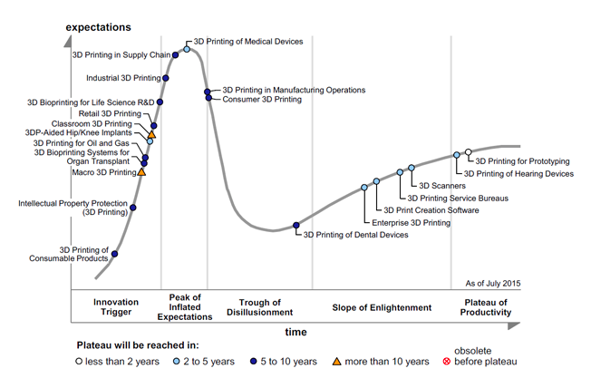
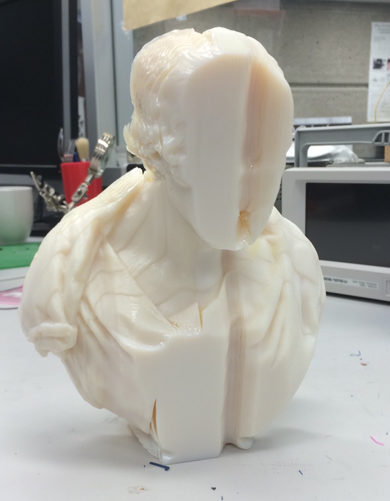

3D Printing
Dimitar Jordanov, Curtis McCord, Lauren Olar & Dawn Walker
November 26, 2015
3D Printing and
Additive Manufacturing (AM)
A family of methods for creating physical objects from virtual representations and digital files of modelled objects or 3D scans.
Techniques
Most common 3D printing techniques extrude a range of materials using heated nozzles, building up objects a layer at a time:
- Fused Deposition Modelling (FDM)
- Stereolithography (SLA)
- Selective Laser Sintering (SLS)
Early applications primarily rapid prototyping, however matured technique printing is establishing itself in more markets and sectors.
History
Automated AM developed in the 1960s but not until 1980s and advances in computer-aided design and computerized task management that they were greatly improved.
First 3D printers used SLA technology. FDM was brought into public eye with release of consumer-oriented Thing-o-matic in 2009. SLS development began in the 1990’s, though it is considered too dangerous to be used outside of specialized industries.
Denkin released the first consumer printer in 2006. Since then, FlashForge and Autodesk among others, have released SLA printers that fit on a bench and can be supported without highly specialized architectures.
Industry Landscape
Manufacturing integral process in many sectors, changes resulting from the move to AM has the potential to impact a range of markets.
Market areas where AM techniques are presently established include: aerospace, automotive, health care (medical devices and models), consumer goods, industry applications, as well as research and education.
Hype
Annual projections of the 3D printing industry at 2020 [Investopedia, 2015]:
Growth
31%
Revenue
$21 billion

Business Perspective
Opportunities for reshaping interactions and relationships between businesses and customers.
AM Characteristics
- Versatile, on-demand manufacturing process
- Eliminates sunk-cost customization and flexibility
- Allows for design and product line complexity without increasing manufacturing costs
- Reduces production steps and manual labour throughout production
Markets
Distinction between primary and secondary markets.
Primary Markets:- Industrial markets comprise 93%
- Clients large enterprises, generate high business value
Secondary Markets:
- Consumer markets consisting of small residential consumers and 3D printing hobbyists
- Largest 3D printer utilization at 79%
Further categorizations depend on the application, region or material used.
Emerging Markets
2015 tends for emerging markets include:
- bioprinting (eg. organs)
- aerospace
- space exploration
Emerging markets usually require further technological advances in order to become more prominent.
Business Models
Enabler for Design Optimization
Value Add By Customization
Cost Efficient Production Method
New Supply Chain Concepts
Repair by AM / Support Services
Emerging Models
Organizational Perspective
Slides can be nested inside of each other.
Use the Space key to navigate through all slides.
Motivations
Interactions and Relationships
Business Processes
Organizational Roles and Units
Information Perspective
3D Printing is not like the systems discussed previously
Information perspective focuses on the CAD packages used to create the object to be 3D printed
Physical Considerations
Need to keep in mind the physical aspects of the model
Size
Object needs to fit the printer and the needs of the user
- Size of the printer and what is to be printed
- For interlocking objects, consider how they fit together
- Size of the object the model will be used with/on (for example, jewelry)
Appendages
Some areas of a 3D printed object are vulnerable during and after printing. May changehow the model is posed or require additional support for the printing process.

http://www.shapeways.com/tutorials/how-to-prepare-your-render-animation-model-for-3d-printing
(Berenhaus, 2015)
Cost
Some materials are very expensive to print with. For some objects, may want to hollow the object or create them thinner to save on material.
File Considerations
This aspect is more in line with traditional information perspective
Takes into account the CAD packages as a whole
Origin
Most organizations will create their own models to print. However, anyone with access to 3D modelling software would create one.
Online communities, such as Shapeways, offer a place for people to upload designs to be printed and shipped.
Reliability / Trustworthiness
This aspect will depend on the origin of the model
- Most likely accurate when created within organization
- If created by amateur and uploaded, may not be very reliable
- Uploaded models may be malformed and unsuitable for printing
Privacy / Security
3D Printers do not care what they are printing
Users are able to print whatever they can create
Organizations should consider encyrption and passing the files through secure servers
(Baker,2015)
Interoperability
3D modelling applications each offer different metadata structures
- Some use custom file formats
- stereolithographs - .stls are the common standard
- .stls often parsed into .gcode format
Application System Perspective
“Even when a design has been optimized specifically for the process, it often takes dozens of tries before a functional part comes out of the printer. And the process of troubleshooting a failed build–even at the most advanced ... shops in the world–still involves a lot of trial and error.”
Wright, S ; 2015
"3D Printing Titanium and the Bin of Broken Dreams"
Core Functionalities
3D printing requires a diverse ecosystem of information, labout, workflows, and applications. Although models can be acquired that are ready-made for printing, there is, in fact, a more expanded, general process that describes the core functionalities of a 3D printing ‘system’, which can include dimensions of both design and manufacturing.

3D Modelling
Depending on their existing design processes, organizations will have various needs when it comes to integrating 3D printing qua manufacturing process. There is already an established ecosystem of modelling applications that are integratable with a 3D printing workflow. The type of modelling software selected affects not only the software architecture, but the price, capabilities, and the amount of training needed to operate them.

Parametric modelling softwares such as Solidworks, Autodesk Fusion or Blender (shown above) allow users to create objects by changing dimensions or by extruding faces. Some of these programmes have been mainstays of the modelling craft for years, and have steep learning curves. They are very complex, and allow many parts to be represented in assemblies.
Direct modelling softwares, such as MeshMixer use brushes to sculpt or shape objects directly. These softwares may be unsuitable for modelling large part assemblies but might also be the best option for repairing found models or 3D scans.
Slicing
Slicing is the process of taking a 3D model and preparing it for printing by making it readable for 3D printers (Gcode). Slicers assist users in configuring their models for optimal printing by calculating material usage and cost, as well as configuring attributes such as :
- Nozzle, bed and chamber temperature
- Speed of nozzle movement
- Number of outer walls (shells) on model
- Amount of material in model interior (infill)
- Orientation of model on bed
- Supports for printing complex geometries
Printing Processes: Print Drivers and Networking
Print-drivers are applications, that can direct relay information from a computer to a 3D printer, either over Wi-Fi or through a USB connection. Sometimes, the print-driver software is build directly into slicing software. Alternatively, 3D printers may have special firmware enabling them to interpret certain types of files output from slicing programmes into printing motion. These printers can read G-code numerical control language files and print the model contained in those files. There are a wide range of firmwares used by 3D printers [RepRap, 2015]. Cloud-based process have users upload models to cloud-based applications, their parameters specified, and then streamed directly to a 3D printer [Autodesk, 2015, The Printer Working Group, 2015]. These models attempt to mitigate some of the computational opportunity costs of processing complicated 3D models, though they are still under development.
Architecture types from [Ratto and Doell, 2015]
Types of 3D Printers
Fused Deposition Modelling (FDM)
FDM printing is the most widely known type of 3D printing, and the most accessible to consumers. FDM printing is ideal for printing a variety of conventional and experimental materials, depending on the capabilities of the printer itself. Basic printers often print plastics like PLA or ABS, which are durable and suitable for a wide range of applications. With a heated bed or chamber, printers can also print materials like wood-composite, nylon, polycarbonate, and carbon-fiber reinforced materials.
Image licensed through Creative Commons, source: http://reprap.org/wiki/Fused_filament_fabrication.
Stereolithography (SLA)

SLA printing is perhaps the oldest 3D printing technology, first commercialized in the 1980’s by 3D Systems [Wohlers and Gornet, 2014]. SLA printing operates by using a laser or UV light to cure a photosensitive liquid resin (a prepolymer) into a coherent polymer structure isomorphic to a 3D model [Bàrtolo, 2011]. This is done by exposing a vat of liquid resin, curing it in successive layers. SLA has the advantage of being able to print in high resolution, as well as to create complex geometries– giving it excellent potential in the medical and dental modelling fields, as well as an established role in rapid prototyping [Cline, 2013]. SLA is now also becoming increasingly available to consumers, bringing greater potential for independent designers and smaller businesses, as well as makers [Anusci, 2015].
Selective Laser Sintering (SLS)
Evolution and the Future of 3D Printing
Open Source 3D Printing
Because of the robust communities of practise including makers, designers, researchers, etc, there many Free and Open Source solutions available for all aspects of a 3D printing workflow. The following applications are all FOSS, released under some permutation of a GNU GPL lisence and are some of the most powerful applications available.
- Modelling programs include Blender, OPENSCAD and MESHMIXER.
- Slicers include Slic3r, Cura, Simplify 3D
- Some companies like Autodesk often work with their users to refine their products using open source licences.
- Aleph Industries TAZ LULZBOT printers (below) are also certified "free" by the Free Foftware Foundation [Lulzbot, 2015].
Requirements & Design
Modelling Languages
There are a number of steps within a 3D printing work-flow that can reliably be expected to arise, including steps like mesh repair, slicing, placement, and setting parameters. While these, in a sense could be reflected by BPMN models, it should be noted that this would obscure a lot of the skilled heuristic work within these subprocesses. Data flow diagrams would offer an interesting, though very distant model of the mediation of data throughout a 3D printing process. We must at all points, however, recall that there is a large amount of feedback between printer and operator which is obscured by rigorous modelling languages, though they may be useful for training and documentation.
Special Challenges
Throughput
Including modelling, prep and print time, and accounting some objects may take hours or days to create. Organizations need to be aware of this timeliness and consider if the amount of objects they need vs how many printers they can acquire is reasonable in order to adopt 3D printing into their processes.
Scalability
Some 3D designs do not scale to traditionally manufacturing. What may work out in a 3d printed prototype may not always scale to manufacturing ideals when geometry and number of parts needed are considered.
Extensibility
Open source 3D printers can be modified to increase nozzle size, to accept more extruder heads, or to print in different materials. In some cases, they can even be rebuilt to print in larger volumes. Both the hardware and software of simple FOSS FDM machines is extremely modular. Proprietary systems do not age as well, and will need to be replaced when their original functionality no longer serves firm needs.
Usability
Printers can take practise to calibrate and may break down. Operators must be prepared to get to know the mechanics of their software and printers, and to keep the printers maintained. Learning to print requires taking on a new mindset to object creation.
Interoperability
Having an interoperable hardware and software environment is essential to 3D printing. However, with either proprietary or FOSS equipment, this is generally an easy standard to attain, thanks to widespread use of .stl and .gcode formats
Reliability
Models can fail in many ways, from inter-layer adhesion issues, improper calibration, material feed malfunction, temperature being off, or the slicing may have failed. Troubleshooting these problems and getting 3D printers into a good work-flow is the task of skilled operators, and can only be accomplished with research, technique and time!
Standards & Guidelines
Currently nascent, either local to organization, or derived ad hoc from file format and software requirements) [Brewster, 2013]
Informality of standards seen a key barrier to widespread adoption [Monzón et al., 2015]
Industry Standards, Guidelines, and Best Practises
More efforts are being formed to develop and codify best practises, primarily driven by:
- ASTM International (previously American Society for Testing and Materials)
- International Organization for Standardization (ISO)
Government agencies trying to encourage development of measurements and standards through grants and policy. (e.g. NIST recently awarding $7.4 million in grants [NIST, 2013].
Hierarchy of AM standards by ASTM and ISO
[Monzón et al., 2015]
Recent Trends
- 3MF Industry Consortium (2015)with printer manufacturers formed to release a 3D printing format specification (3MF) [3MF Consortium, 2015]
- Printer Working Group (2015) White Paper on standardizing 3D Printing using current PWG Semantic Model [The Printer Working Group, 2015]
- ISO (2011) Committee TC 261 for AM with four working groups (WG1-WG4)
- ASTM International technical committees on AM working on standards (F42, F42.01, F42.04, F42.05)
- UL (Underwriters Laboratories) (2015) safety-oriented “3D Printing [AM] Equipment Compliance [Guidelines]” and Medical Equipment guidelines [UL, 2015, Wikipedia, 2015]
Regulatory and Legal Considerations
Challenging landscape because 3D printing technology development is not centralized to one country. United States hosts many key companies, manufacturers and other organizations, but others in South East Asia and Europe.
Already regulated markets and safety-critical sectors (e.g. aerospace and health care) have to receive additional approvals from industry regulators (e.g FAA and FDA). [Wright, 2014].
Material product Intellectual Property rights: design protection right, copyright, patent and trademark are enforced through increasingly harmonized laws under the Trans-Pacific Partnership (TPP) [Bradshaw et al., 2010, Depoorter, 2014]
Patents
Surge in IP proliferation from 2010 on. Top 20 companies holding patents reveals a mix of:
- ‘direct entrants’ (Stratasys, 3D Systems Inc., Objet Ltd.)
- established companies diversifying into the industry (Hewlett-Packard Co, IBM, Xerox)
- research institutions (MIT, University of Northwestern)
Has been recent aggressive acquisitions and portfolio consolidation primarily by Stratasys and 3D Systems Inc.
Despite this, still distribution of patent holders across the range of application areas, materials and technologies
Associations and User Groups
Oriented toward industry members including manufacturers, designers and resellers along- side scientific research organizations:
- Additive Manufacturing Association (AMA in the VDMA)
- Association for Manufacturing Additive Technology Group (AMG)
- 3D Printing Association (3DPA)
Education and Users including owners and operators of additive manufacturing equipment:
- Additive Manufacturing Users Group (AMUG)
For consumer equipment, meetups and hackerspaces continue to be popular ways to interact with 3D printers.
Government Support
In United States significant support has come from the Federal Government since 2012 through the National Network for Manufacturing Innovation (NNMI) and America Makes, a national accelerator for additive manufacturing and 3D printing:
“linking and integrating [small- and medium- sized, or startup] companies with existing public, private, or not-for-profit industrial and economic development resources, and business incubators”
References
[Baker, 2015] Baker, P. (2015). 3d printers: It's next great data challenge. [Online; accessed19-October-2015] [Berenhaus, 2015] Berenhaus, L. (2015). How to prepare your render/animation model for3d printing - part 1 of 2.